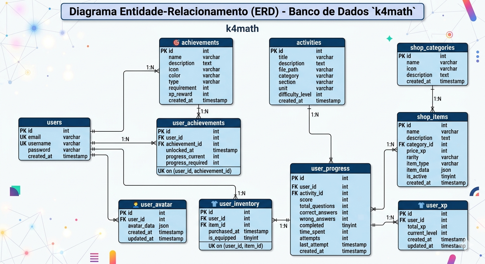

01
01
Full-Stack Development
K4Math
PHP + MySQL + JS gamified learning platform — my technical-school capstone, still my most complete front-to-back build.
76Exercises
Open the case ↗
I build full-stack web systems and turn the data they generate into decisions. Two hackathon wins, four platforms live, and a notebook that never closes.
01
PHP + MySQL + JS gamified learning platform — my technical-school capstone, still my most complete front-to-back build.
 02
02
Exploratory analysis of a US retail chain — profit read by category, segment and region, built in Excel and Power Query.

03Three schemas designed from scratch — normalization, stored procedures, triggers and reporting queries in MySQL and SQL Server.
I model the database, ship the interface, wire up the automation — and only call it done when the numbers explain what the screen shows.
A development marathon focused on API integration and shipping working software within the deadline. Overall first place.
A credit-risk challenge with real data. Our team delivered the First Payment Default model listed above in Work — ROC-AUC 0.796 in 48 hours.
Innovation hub of the Paraíba Valley, home of Science & Business.
The largest manufacturing and industrial technology trade fair in Latin America.
Defense of the university extension project before a panel and audience.
Web development, system routines and databases for internal operations solutions.
Lab support, environment setup and maintenance of the machine fleet.
Administrative routines and spreadsheet control — where the interest in data began.
Java back-end, applied statistics, requirements engineering and capstone project.
Programming, databases, networking and web development. Capstone: the K4Math platform.
Python, SQL, Excel, Cognos and Looker Studio, closing with an end-to-end final project.
Full 9-course track: Python, SQL, Excel, visualization and a final project with a Looker Studio dashboard on the Stack Overflow Developer Survey.
Internship, junior role, or a one-off project — a site, a data panel, an automation. Tell me what you need and I'll give you a straight answer, no runaround.